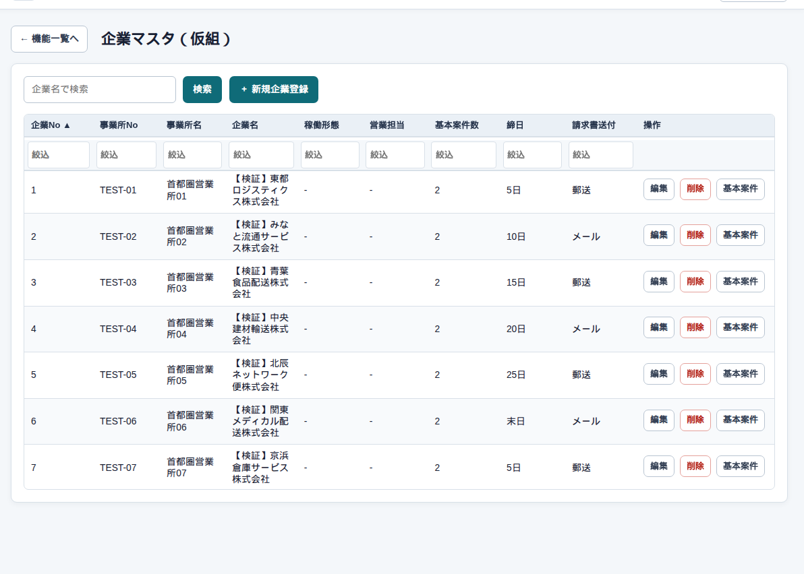
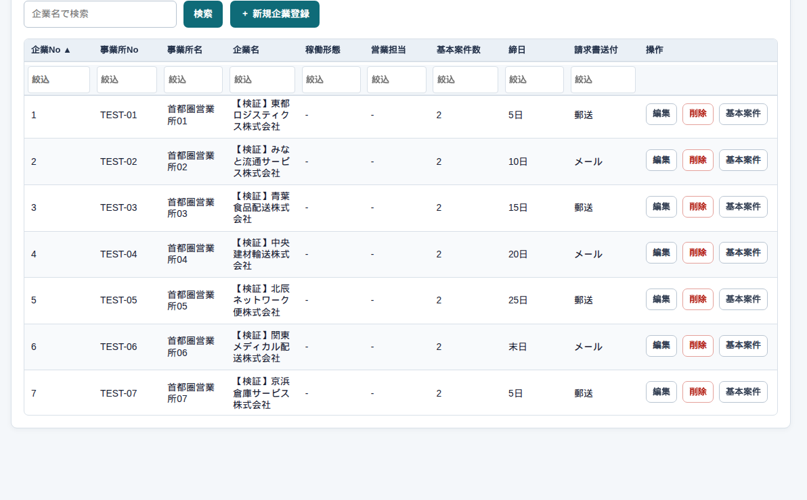

マスタ → 企業マスタ
企業の一覧
まず、この画面
請求先になる会社の台帳です。案件や請求書の宛名は、ここに書いた内容を使います。管理者・システム担当者・総務が使います。


詳細を開く
新規は画面の「新規」ボタンです。既存は行のダブルクリック、または「編集」です。次は 企業の詳細 です。
よくある使い方
新しい取引先を足す
「新規」→ 企業名を入れて保存します。カナや住所は後からでも足せます。案件を作る前に、少なくとも名前は入れておきます。
気をつけること
一覧では勤務時間は入れません。住所や口座は詳細側です。
削除すると、その企業を使う案件や請求に影響します。使っている行は、まず使わなくなってからにします。